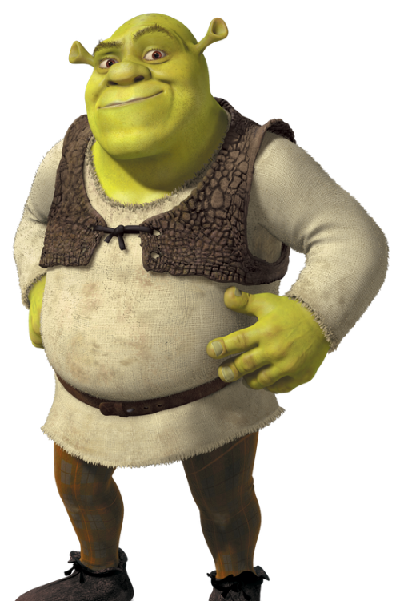
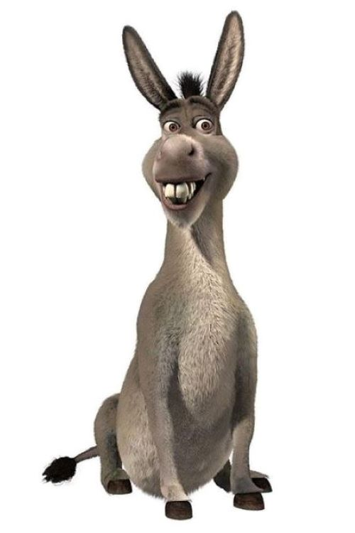
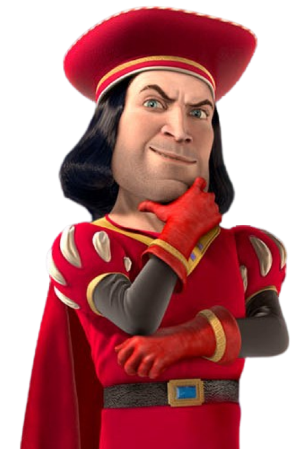
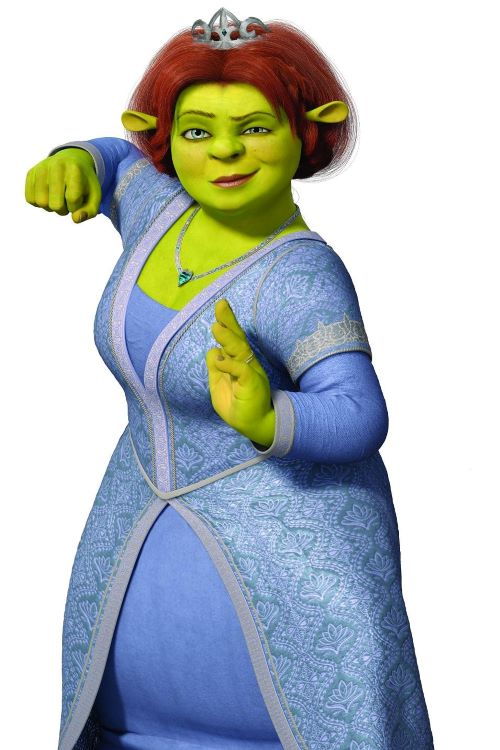
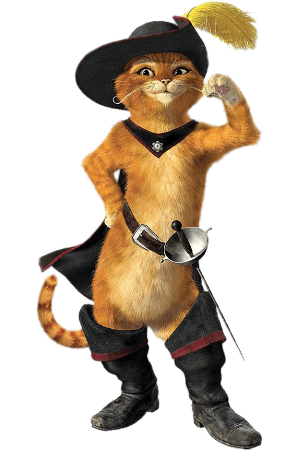
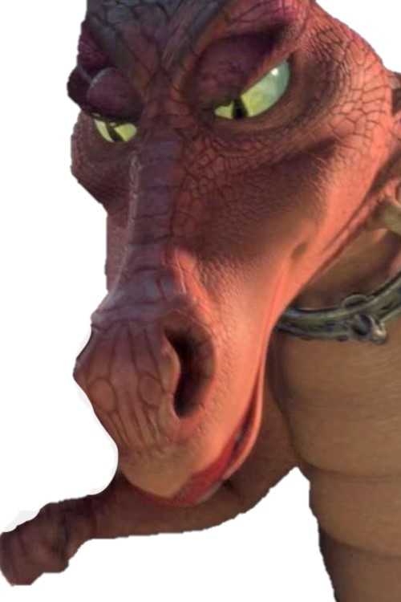

Personages

Shrek is een groene ogre en de hoofdpersoon van alle films.
Ingesproken door: Mike Myers.

Donkey is de pratende ezel en touwe metgezel van Shrek.
Ingesproken door: Eddie Murphy.

Heer Farquaad is de koning van het rijk waarin Shrek zich afspeelt.
Ingesproken door: Eddie Murphy.

Prinses Fiona is de prinses van 'Ver Ver Weg' en Shrek's latere vrouw.
Ingesproken door: Cameron Diaz en Sally Dworsky.

De Gelaarsde Kat verscheen pas in de tweede Film en werd snel een deel van Shrek's team.
Ingesproken door: Antonio Banderas

De draak verschijnt in alle Shrek films. In de eerste Film is ze eerst de vijand, maar wordt later de vrouw van Donkey.
Geen gesproken zinnen